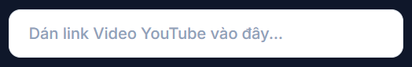
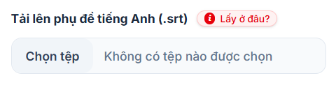
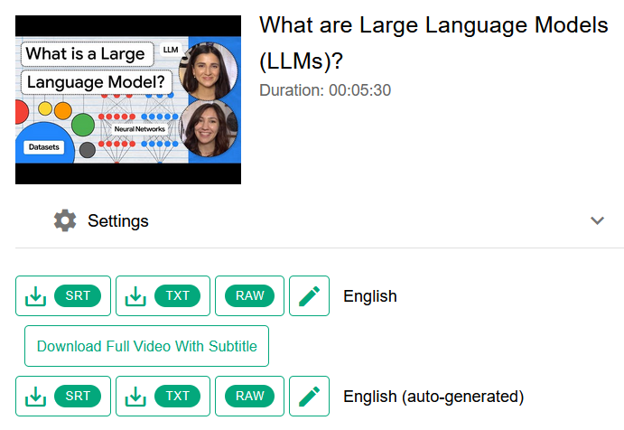
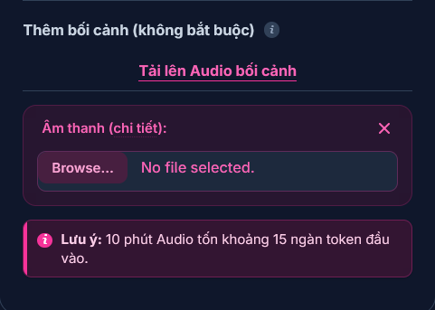
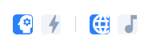
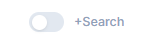
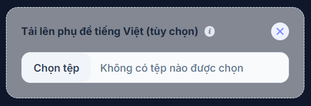
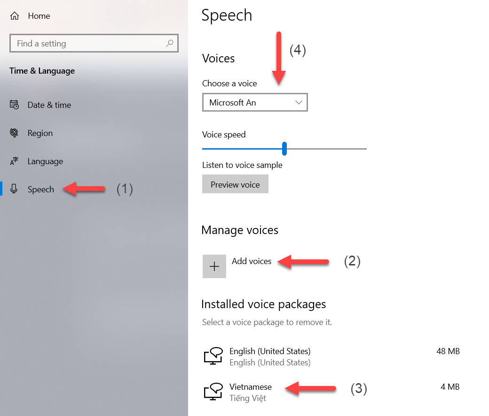

Giao diện ô nhập đường dẫn URL từ Youtube.
Ở cột bên tay phải, phía trên là nơi để bạn nhập link video YouTube. Tạm thời bạn đang đọc hướng dẫn này thì chưa cần nhập vội, vì khi nhập, video sẽ hiển thị ở đây thay cho bài hướng dẫn.

Chọn tệp phụ đề (.srt) từ máy tính của bạn và nhấn nút Tải lên.
Tìm công cụ tải phụ đề YouTube trên mạng với từ khóa: 'download youtube subtitle'. Tải file định dạng .srt về.
Đa số các video tiếng Anh trên YouTube đều được tạo tự động phụ đề rồi.
Một số video được người up chủ động đẩy lên phụ đề của họ, kiểu phụ đề này thường có chất lượng tốt hơn một chút phụ đề được tạo tự động. Nếu bạn thấy thì nên tải phụ đề của chủ kênh up lên. Nếu không thì tải về phụ đề được tạo tự động.

Công cụ tìm phụ đề tìm thấy 2 phụ đề, cái trên là do chủ kênh up lên, còn cái dưới (auto-generated) là phụ đề được tạo tự động. Bạn nhớ tải định dạng phù hợp với ứng dụng là .srt về.
-
Phần thêm bối cảnh là không bắt buộc và chỉ cần khi nội dung video phức tạp (nhiều người trao đổi qua lại). Trường hợp đó ứng dụng có thêm ngữ cảnh để dịch được tốt hơn.
Trong trường hợp có nhu cầu cung cấp thêm ngữ cảnh, bạn hãy up lên audio gốc của nội dung.

Tính năng up lên audio gốc.
Chọn mức độ sáng tạo, model AI khi dịch, kiểu dịch, và bổ sung khác.

Tùy chỉnh các thông số AI để có bản dịch ưng ý nhất.
Từ trái qua phải:
Ở góc dưới bên phải (chỗ chân trang/footer) có tùy chọn bổ sung công cụ tìm kiếm cho AI khi dịch, điều này sẽ giúp bản dịch có chất lượng tốt hơn, đặc biệt khi phải dịch các nội dung rất khó hoặc có tính thời sự cao.

Bật công cụ tìm kiếm cho AI trong khi dịch. Mặc định: Tắt.
Khi tính năng này được bật, trong khi dịch, AI có thể sử dụng thêm công cụ tìm kiếm để tra cứu thông tin. Tuy nhiên tính năng này trên Key miễn phí đang bị hạn chế khá nhiều. Ngay cả trên Key trả phí cũng nên dùng thận trọng vì có thể tăng chi phí đáng kể.
Bấm và đợi vài phút để chương trình dịch xong.
Ứng dụng cần trung bình khoảng 1/4 cho đến 1/7 thời lượng của video để dịch toàn bộ phụ đề sang tiếng Việt.
Thời gian thực tế còn tùy thuộc vào model AI nào được chọn, có thêm bối cảnh không và mức phức tạp của nội dung.
Sau khi dịch xong, bạn có thể xem ngay video trên ứng dụng. Bạn cũng có thể tải phụ đề về và xem lại khi cần.
-
Các video dài có thể không thể xem hết ngay, hãy tải phụ đề về, sau đó khi cần xem lại chỉ cần up phụ đề lên, ứng dụng tự tìm video điền vào input để bạn tiện xem luôn:

Xem lại phụ đề đã dịch.
-
Ở footer còn có button "Lồng tiếng", khi bật, ứng dụng sẽ sử dụng giọng đọc tự động của hệ điều hành (ví dụ trên Windows là giọng "Microsoft An") để chuyển phụ đề thành giọng nói. Tuy chất lượng giọng đọc chỉ ở mức trung bình, khó có thể so sánh được với các giọng đọc TTS trả phí (tốn kém) tự nhiên hơn, nhưng ưu điểm của nó là hoàn toàn miễn phí.
Trên máy Windowns để kích hoạt tính năng giọng đọc tiếng Việt (vì thông thường theo mặc định nó sẽ sử dụng giọng tiếng Anh) bạn cần vào Settings > Time & Language > Speech (cài thêm gói tiếng Việt nếu chưa có). Sau đó ở phần Voice (Chose a Voice) chọn "Microsoft An", cuối cùng cần khởi động lại máy để máy tính của bạn chính thức áp dụng giọng đọc tự động mới.

Thêm giọng đọc tiếng Việt trên máy Windows.